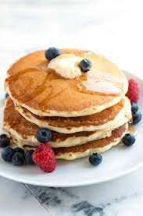

Pancakes

Pancakes...I don't know what you want me to say here...
Do you like pancakes? Want to make them yourself?.
Pancakes are delicious. But let's be honest, they're nothing special. They are but a vessel to carry syrup because someone decided it was unacceptable to just drink maple syrup.
Here's what you need to make pancakes.
- 1 cup all-purpose flour
- 2 tablepoons sugar
- 2 1/2 teaspoons baking powder
- 1/2 teaspoon salt
- 1 cup milk
- 3 tablespoons oil
- 1 egg
Directions
- Preheat a griddle to medium high heat.
- Get your favorite mixing bowl. Combine flour, sugar, baking powder, and salt in said bowl.
- Grab your favorite measuring cup.
- Combine milk, egg, and oil.
- Combine the wet and the dry ingredients and mix.
- Scoop the pancake mix onto the griddle in 1/4 cupfuls
- Combine the confectioners sugar, milk, vanilla, and butter.
- flip the pancakes over after they're cooked on one side
- Make sure to give each pancake a little pat to encourage them.
Nutrition Information
1 serving: as many as you want. I'm not your mom.
Home